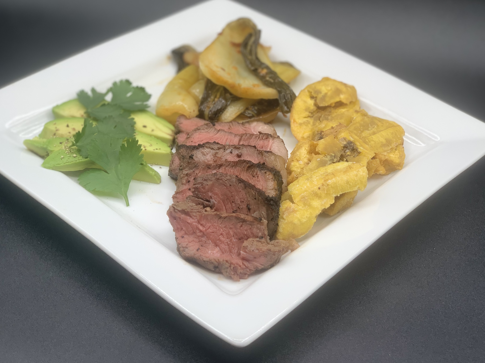

Picanha with Tostones & Baby Bok Choy
Information
Difficulty: Medium
Prep Time: 30 minutes
Cooking Time: 30 minutes
Total Time: 5 hours
Serves: 8
Nutrition Per Serving(Cals/Fat/Protein/Carbs): 432/25g/46g/29g
Total Cost/Cost Per Serving: $31.28/$3.91
Ingredients
For Picanha:
1 Picanha roast with fat cap (also known as top sirloin cap or culotte) about 1-1.5 lbs
2 tbsp fried chili in oil
2 tbsp reduced sodium miso paste
5 cloves garlic
1 tbsp avocado oil
1/4 large red onion
Sea salt
Freshly cracked black pepper
For Tostones:
3 large plantains, as green and firm as possible
Peanut oil, for frying
Sea salt
For Baby Bok Choy:
5 whole baby bok choy
1 tbsp avocado oil
1 tbsp sesame oil
1 tbsp Sambal chili garlic paste
1 tbsp soy sauce
1 tbsp minced garlic
Sea salt
Freshly cracked black pepper
Equipment
Deep Fryer or Large Pot & Oil/Candy Thermometer
Grill
Long (18-24 inch) Metal Skewer
Stovetop Range
Large Skillet or Frying Pan
Large Mixing Bowl
Paper Towel Lined Sheet Tray
Tongs
Knife
Cutting Board
Blender
Large Container w/Lid
2 Ceramic Plates of the Same Size
Collander
Instructions
For Picanha:
1. Place picanha roast on cutting board wiht fat cap side down. Look at the grain of the meat, there will be lines running parallel to each other in one direction. Keeping this grain in mind, flip the steak so the fat cap side is up. Using a very sharp knife, cut roast perpendicular to (against) the grain, into 4-5 steaks of even thickness.
2. In a blender, combine 5 cloves garlic, 2 tbsp fried chili in oil, 2 tbsp reduced sodium miso, 1 tbsp avocado oil, and 1/4 of a large red onion. Blend until smooth. Place picanha steaks into a large container with a lid. Pour marinade mixture from blender over the top of steaks. Use tongs to flip steaks until evenly coated in marinade. Season generously with black pepper. Cover and refrigerate for 4-24 hours.
3. Remove steaks from fridge at least 30-60 minutes before desired cooking time. Pre-heat grill to high heat.
4. To skewer steaks, fold both ends of the steak together to form a horseshoe shape with the fat cap facing out. Carefully pierce the steak with the skewer through the 'sides' of the horseshoe shape, leaving the open end to one side and making a 'C' shape on the skewer.
5. Season steaks on the skewer with sea salt and freshly cracked black pepper. Place on grill directly on flame. Depending on thickness, each side will take 6-9 minutes. Use a meat thermometer to check the internal temperature and remove from the grill once steak reaches 120º-125º. Allow to rest for at least 5-10 minutes before removing from skewer and carving.
6. Remove steaks from skewer and arrange so the fat cap is facing you. Cut into 1/2-1 inch thick slices, serve immediately.
For Tostones:
1. Pour peanut oil to fill line in deep fryer or to fill about 1/4 of a large pot. Pre-heat oil to 320º, using either the fryer temperature control or a stovetop range and a fryer or candy thermometer. Be very mindful of the oil temperature to prevent burning and fire hazards.
2. Use a knife to slice just through the skin of each plantain from top to bottom. Use your thumb to separate the flesh of the plantain from the skin, being cautious to keep plantain whole. Repeat with remaining plantains.
3. Cut plantains at a 45º angle to create 4-5 even pieces from each. Carefully lower plantains into oil and allow to fry for 2-3 minutes. If using a pot, make sure to keep plantain from sticking to the bottom by gently stirring with a pair of tongs or a slotted spoon.
4. Remove plantains from oil and palce on a paper towel lined sheet tray. Allow to cool for at least 30 minutes. Heat oil to 350º
5. Place one plantain piece, cut side down, on a ceramic plate with a flat bottom. Using another plate of the same size, press the plantain down with even pressure to flatten it to about 1/8 inch thickness. Repeat with other plantain pieces.
6. Fry flattened plantain pieces in two batches to prevent crowding. Fry until edges begin to brown and the tostones feel very crispy. Drain oil and place tostones in a large mixing bowl. Season well with sea salt and gently toss to evenly coat. Enjoy while hot and fresh!
For Baby Bok Choy:
1. Place baby bok choy on a clean cutting board. Cut off the bottom 1/2 inch of each bok choy. Carefully pull each leaf of the bok choy off and place in a large collander. Repeat with remaining baby bok choy heads. Rinse well in cold water to remove any dirty. Allow to drain well.
2. In a large frying pan, combine 1 tbsp avocado oil, 1 tbsp sesame oil, 1 tbsp minced garlic, and 2 tbsp sambal chili paste. Place pan over medium low heat. The garlic and chili paste will begin to sizzle in oil as it heats up. Once it begins to sizzle, allow to cook for about 2 minutes, then add drained baby bok choy leaves. Use tongs or a wooden spoon to gently toss baby bok choy for even coverage.
3. Allow bok choy to cook over medium heat for about 4-5 minutes, until edges begin to turn ever so slightly brown. Deglaze pan with 1-2 tbsp soy sauce. Lower heat to medium low.
4. Once baby bok choy has reached desired level of doneness, remove from heat and serve immediately.
Pairs With
Argentinian Malbec
Rioja
Amarone
Barolo
Cabernet Franc
IPAs
Porter or Stout
Sake